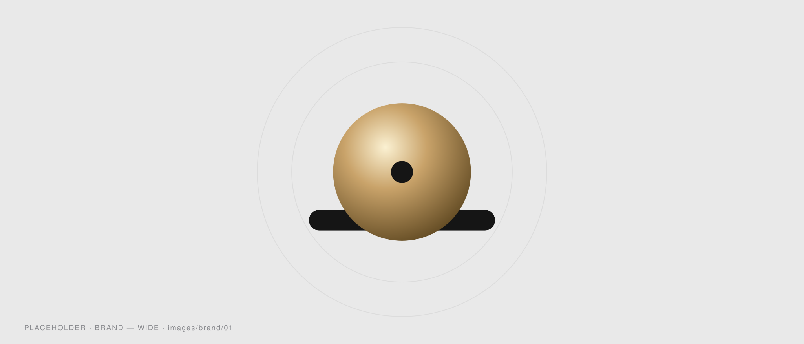
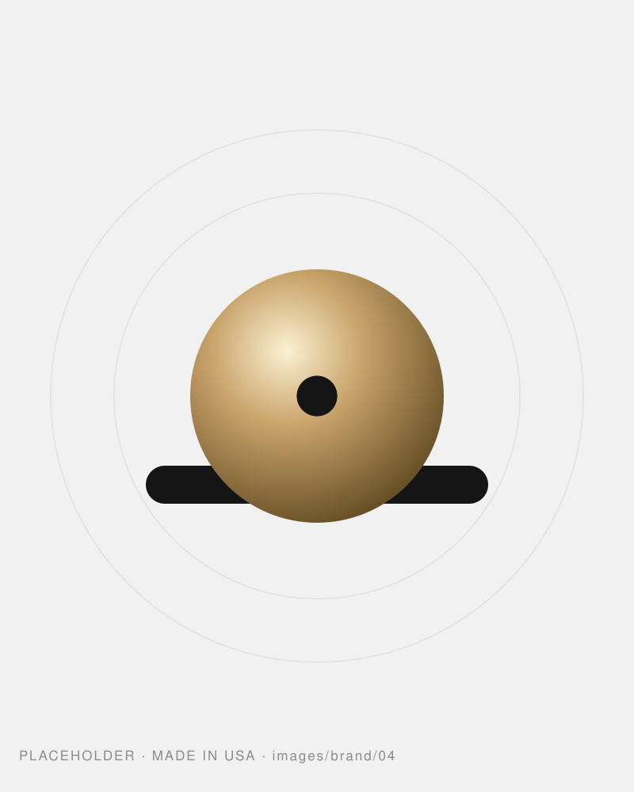
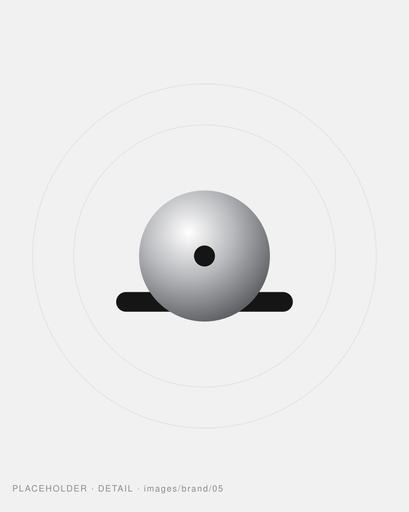
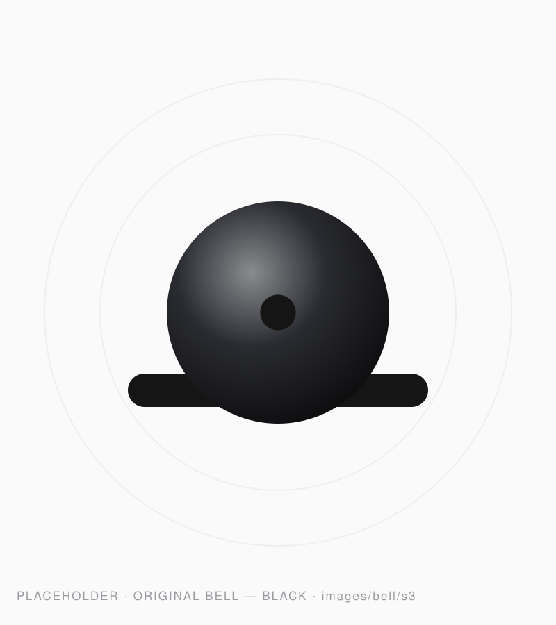
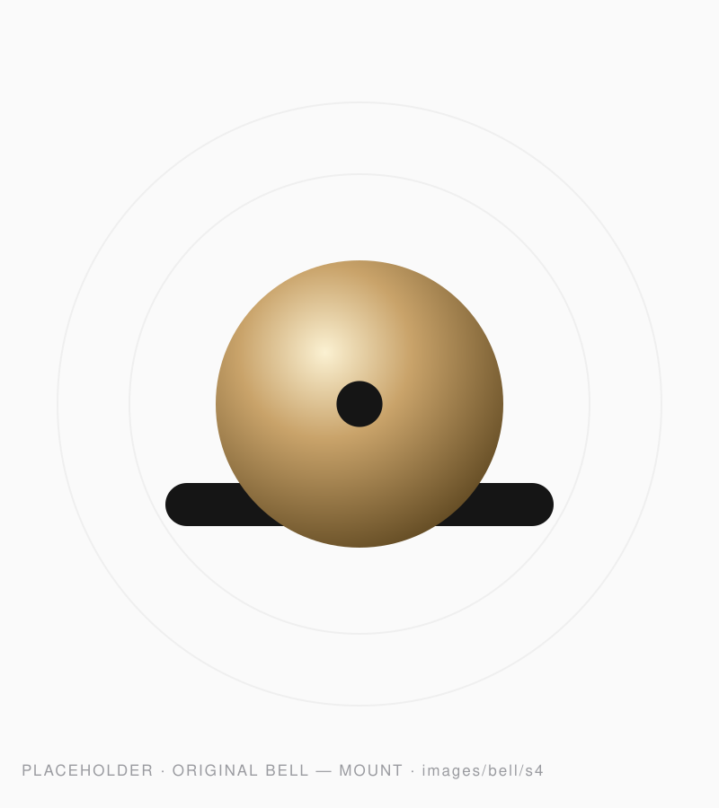
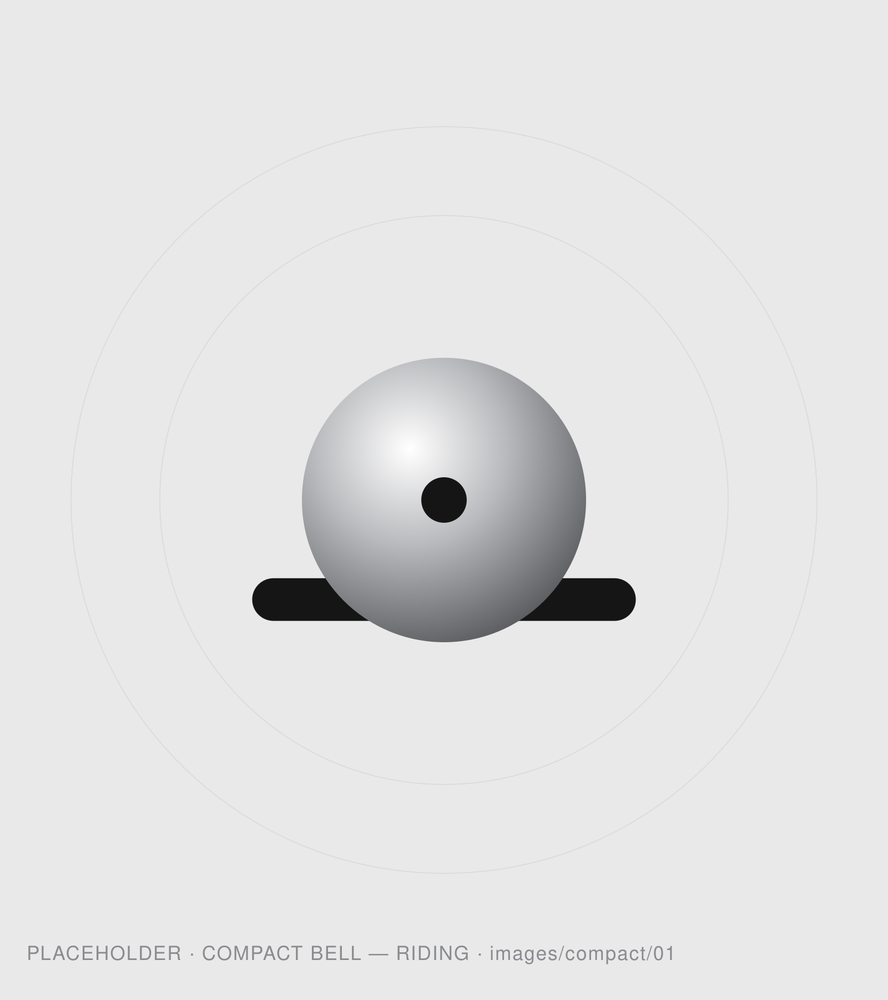
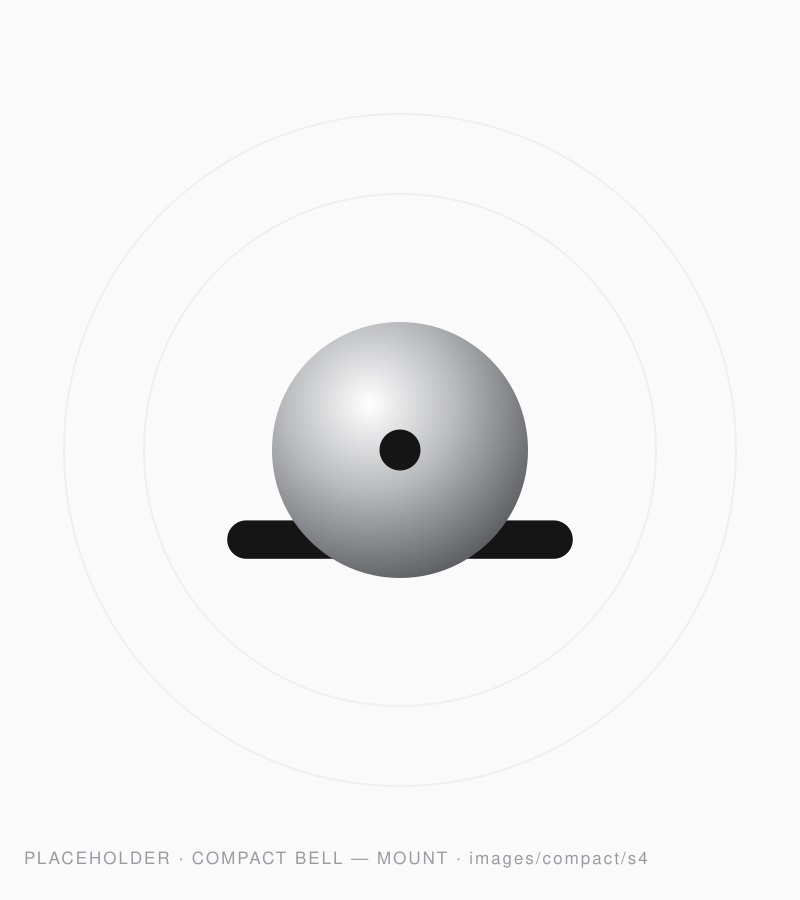
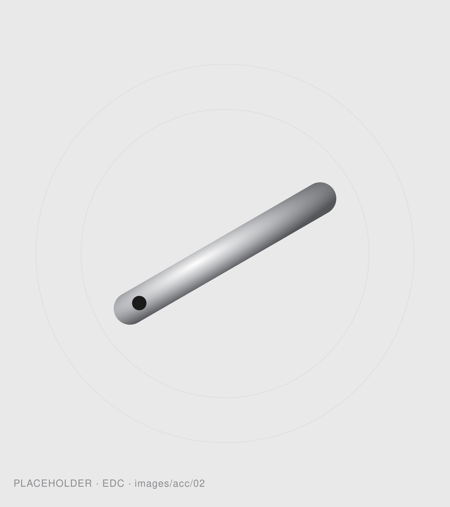
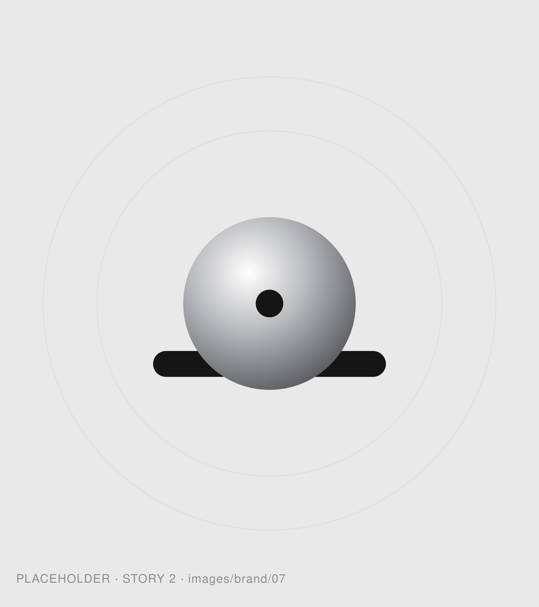

컴팩트 바디
더 작은 몸체로 붐비는 콕핏에도 쉽게 들어갑니다.
01
Brand
SpurcycleMade in USA · Since 2013
Spurcycle(스퍼사이클)은 자전거 벨처럼 작고 흔한 물건도 제대로 만들면 평생 쓸 수 있다는 생각에서 시작한 미국 브랜드입니다. 쉽게 부러지고 소리가 금방 끊기는 벨 대신, 작고 단단하면서 멀리까지 맑게 울리는 벨. 크라우드펀딩으로 첫 벨을 선보인 뒤로 Spurcycle은 지금도 같은 원칙으로 물건을 만듭니다.
Spurcycle은 불필요한 것을 더하지 않습니다. 오래 가는 소재, 정확한 가공, 어떤 자전거에도 어울리는 절제된 디자인. 라이더가 벨을 의식하지 않고 라이딩에 집중할 수 있도록, 필요한 순간에만 분명하게 존재감을 드러냅니다.

Design
좋은 벨은 여러 번 울릴 필요가 없습니다. Spurcycle 벨은 한 번의 스트라이크로 길고 깨끗한 소리를 냅니다. 보행자와 다른 라이더에게 거슬리지 않게, 그러나 확실하게 내 존재를 알립니다.
장식 대신 비율과 마감에 공을 들였습니다. 로드, 그래블, 시티 바이크 어디에 달아도 콕핏의 일부처럼 자연스럽게 어울리고, 시간이 지나도 질리지 않는 모습으로 남습니다.
필요한 것만 남긴 형태. 작고 단단한 몸체가 핸들바 위에서 조용히 제 자리를 지킵니다.
한 번의 스트라이크로 길게 이어지는 맑은 울림. 도로의 소음 속에서도 또렷하게 들립니다.

미국의 제조 파트너와 함께 만듭니다. 가까이에서 만들기에 품질을 끝까지 직접 챙길 수 있습니다.

날씨와 진동, 오랜 사용을 견디도록 고른 소재와 마감. 한 번 단 벨을 다시 바꿀 일이 없도록.
Spurcycle
The Range
로드부터 시티 바이크까지, 자전거에 맞는 하나.
02
The Bell
Original Bell오리지널 벨
오리지널 벨은 Spurcycle이라는 이름을 알린 첫 제품입니다. 손가락 끝으로 가볍게 튕기면, 작은 몸체에서 상상하기 어려운 길고 맑은 울림이 퍼져 나갑니다. 짧게 '딸랑'하고 끝나는 벨과는 다른, 멀리서도 또렷하게 들리는 소리입니다.
견고한 소재와 정밀한 가공으로 만들어 오랜 시간 같은 소리를 유지합니다. 핸들바에 단단히 고정되는 마운트 덕분에 거친 노면에서도 흔들리거나 돌아가지 않습니다.
한 번의 스트라이크로 길게 이어지는 울림. 여러 번 울리지 않아도 충분히 전달됩니다.
스틸과 황동 등 오래 가는 소재로 만들어 날씨와 진동에도 같은 소리를 유지합니다.
핸들바에 단단히 고정되어 거친 노면에서도 돌아가거나 흔들리지 않습니다.
미국의 제조 파트너와 함께 만들고, 하나하나 품질을 확인합니다.
Original Bell · Ring once, ring clearRaw · Black


03
Smaller · Lighter
Compact Bell컴팩트 벨
컴팩트 벨은 오리지널 벨의 철학을 더 작은 크기에 담았습니다. 라이트, 컴퓨터, 마운트로 핸들바 공간이 빠듯한 로드와 그래블 바이크에서도 자리를 크게 차지하지 않습니다.
크기는 줄었지만 Spurcycle다운 맑은 울림과 단단한 만듦새는 그대로입니다. 미니멀한 세팅을 좋아하는 라이더를 위한 Spurcycle입니다.

더 작은 몸체로 붐비는 콕핏에도 쉽게 들어갑니다.
작아져도 Spurcycle다운 깨끗하고 또렷한 소리를 냅니다.
오리지널 벨과 같은 소재와 제조 기준으로 만듭니다.
Compact Bell · Small, still clearRaw · Black

04
EDC · Tool
Accessories액세서리
Spurcycle은 벨 외에도 라이딩과 일상에서 쓰는 툴과 EDC(Everyday Carry) 액세서리를 만듭니다. 주머니와 안장 가방에 늘 넣어 다니는 물건일수록 작고, 가볍고, 오래 가야 한다는 생각은 벨과 같습니다.
취급 모델과 재고는 시기에 따라 달라질 수 있습니다. 현재 판매 중인 액세서리는 루비워크샵에서 확인해 주세요.

05
Story
2013 ~ 2026USA · Every road
대부분의 자전거 벨은 싸고, 쉽게 부서지고, 금방 버려집니다. Spurcycle은 이 작은 물건을 처음부터 다시 생각했습니다. 오래 가는 소재로, 가까운 곳에서, 제대로 만든다면 벨도 평생 쓰는 물건이 될 수 있다고 믿었습니다.
크라우드펀딩으로 시작한 첫 벨은 전 세계 라이더들의 지지를 받았고, 그 뒤로 Spurcycle은 같은 원칙으로 컴팩트 벨과 툴, EDC 액세서리까지 라인업을 넓혀 왔습니다. 루비워크샵은 이 철학을 한국의 라이더들에게 소개합니다.

06 · Showroom
벨은 들어봐야 압니다. 루비워크샵에서 Spurcycle 벨의 소리를 직접 들어보고, 자전거에 맞는 모델과 컬러를 함께 골라 보세요.
For Dealers
Spurcycle 매장 입점과 거래 조건은 루비컴퍼니의 B2B 채널 루비서플라이로 문의해 주세요.